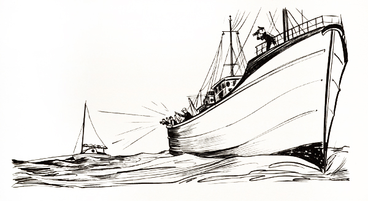
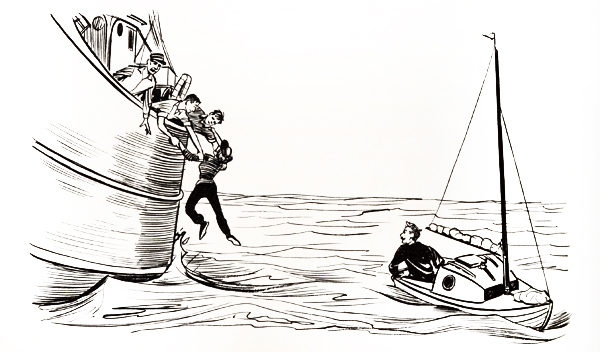

"TINKERBELLE"
Chapter 17
Toward evening on August 9th Tinkerbelle and I were alone again on the ocean, the trawler Roseland, the R.A.F. Shackletons and the smaller civilian plane (which, I found out later, had brought out Bill Ashbolt and Eddie Worth) having departed to return to their bases. The wind died to a mere whisper, making it difficult to maintain steerageway. We rolled about in the swells for two or three hours before another breeze sprang up, this one from the south, enabling us to roll along right on course. We kept going in fine style until about 3 A.M. when we hove to. I had to have sleep.
The next day (Tuesday, August 10th) I awoke at 7 A.M. (G.M.T.) and we resumed our pace. The noon sight put us at 50° 19' N. For the last two days we had moved steadily northward toward Ireland, which meant we were in the clutches of another current. According to the Sailing Directions, it was probably Rennell's Current, which flows at one to one and a half knots northward across the western approach and entrance to the English Channel. Our bumping into it indicated, at least, that we were getting close to the channel.
We struggled all afternoon and part of the night to get back down below 50° N, but a sextant shot at Polaris during the night put us even farther north, at 50° 25'.
On Wednesday, August 11th, clouds covered the sky, making it impossible to shoot the sun, so I couldn't be sure where we were, exactly. I just had to do the best I could with dead reckoning and hope the sun would come out again before we got into deep trouble.
That night, when I was putting out the sea anchor and taking down the sails, I lost the mains'l halyard up the mast. Fortunately the end of the halyard didn't run through the masthead sheave; the shackle that serves to attach the halyard to the head of the sail was too big to go through it. But how to get it down again, that was the problem. And I had to get it down or I wouldn't be able to raise the sail.
It was too dark then to see what I was doing, so I decided to wait until morning. I had a hard time getting to sleep because of worrying about how to go about retrieving the halyard end. I knew I couldn't climb up the mast since my weight would certainly capsize the boat. I wasn't panicky, for I knew that if worst came to worst I could unfasten the forestay and lower the mast in its tabernacle, which would make it simple to recover the halyard and shackle. But lowering the mast at sea would be a tricky operation and I didn't want to do it unless it was unavoidable. I hoped there was another way.
After some cogitation in the morning (August 12th) I decided the topping lift might be it. This consisted of a light dacron line that ran through a small block at the masthead and had both its ends attached to the end of the boom. With wire and a pair of pliers I improvised a little grappling hook, lashed it to the topping-lift line and ran it aloft.
It took about thirty minutes of flipping the line about to accomplish it, but finally I snagged the shackle with the grappling hook and, much to my relief, was able to pull the halyard end back down, shackle it to the head of the mains'l and then, joy of joys, hoist the sail. We were ready to get cracking again. It was a great pleasure to have escaped so easily from what might have been a rather sloppy situation.
We had to spend part of the morning riding to the sea anchor because the wind blew too hard for us to sail safely, but even so, sometime during the day we crossed the meridian of 10° W, completing the last full stride in the oceanic countdown to Falmouth, England. There were less than five degrees of longitude left to cover. We should reach our harbor haven (and possibly it would seem like heaven, too) in less than a week, maybe in as little as five days. The voyage was advance in age now; it was old, full of "years." The end, with its mingled joys and sorrows, was near.
It was still quite cloudy. At midday, however, the sun came out long enough for me to get a good latitude shot. It showed we were farther north than ever, at 50° 33' N, and that meant we were within sixty-five miles of the coast of Ireland. Something had to be done or we'd make an unintentional landfall on Cape Clear.
The trouble was that besides the current we had a southeast wind to fight, and that meant tacking. And that, in turn, meant slower progress; and I wasn't in the mood for dawdling. I did everything I could think of to propitiate Aeolus and induce him to shift the breeze around to the south or southwest, but nothing worked. It came down to making a choice between tacking and landing in Ireland. I chose tacking.
I had nothing whatever against Ireland or the Irish; it was just that I had started out to sail to England and my family and newspaper colleagues were waiting for me there. So the only decent course of action was to do my level best to get there. We went over on the port tack, heading southwestward on a course of 220°. This took us southward against the current all right, but it also took us away from England. It was only on the starboard tacks, if the wind held in the southeast, that we'd be able to head toward England.
Early in the afternoon, while still on the port tack, I heard a plane to the south; in fact, I continued hearing it for half an hour or more. I thought that probably it was the R.A.F. back, trying to find me, and later I learned the R.A.F. had been out looking for me and that its failure to find me had aroused considerable concern on shore. (I hoped Virginia wasn't worried. I had told her that small-boat voyagers were reported lost rather frequently, erroneously, and not to be unduly alarmed if I was so reported.) As I had feared, it was widely reported that I was lost, but of course I wasn't. It was simply that nobody knew where I was except me.
About the time the sun dipped below the western horizon, the wind moved into the southwest, enabling Tinkerbelle to sail southeastward on a broad reach. We were on the home stretch, sprinting for the finish line.
The breeze was so good I decided to keep going all night and sometime after midnight we passed down the aisle between two long rows of trawlers, so brilliantly lighted they gave the ocean a festive look. We seemed to be rolling along the surface of a mammoth liquid birthday cake between two ranks of flickering candles. The experience put me into a happy, partyish frame of mind.
When daylight returned, I suddenly realized it was Friday the thirteenth and I wrote in the log: "I hope this isn't an unlucky day." It wasn't.
All that day and the following night we continued sailing southeastward, battling the Rennell Current, working our way to a lower latitude so that we could pass to the south of the Scilly Isles and into the English Channel. I believed that would be much safer than trying to go to the north of the Scillys because along the northern route lay dangers of the Seven Stones, a mile-long group of exposed rocks, and Wolf Rock, a lighthouse-topped hazard some eight miles southwest of Land's End.
We continued moving southeastward throughout the next day (Saturday, August 14th) and through about half the night. Shortly before midnight we approached a particularly brightly lit trawler and I thought I had better go up and check our position. As we drew near, I saw what seemed to my unsophisticated eyes to be some sort of pagan rite, perhaps a ritual of initiation. Persons clad in yellow oilskins (and I'm almost positive some of them were women) were kneeling on the deck and then rising and kneeling again. Then they would disappear into the hold for a while, only to reappear and go through the whole rigmarole again. I simply couldn't understand what it was all about.
I hated to disturb whatever was taking place, but I hated even more to go without a check on our position. So when we got to within ten or fifteen yards of the trawler I yelled with all my might, "Which way to Bishop Rock?"
It was a silly question: I'll admit that freely because I knew the way perfectly well. (Bishop Rock was a navigation hazard near the southwestern edge of the Scilly Isles and on it stood Bishop Rock Light, a hundred-and-sixty-seven-foot-high granite lighthouse. It was used as a point of departure or arrival by most of the ships entering or leaving the English Channel, and it was about forty-five miles away on a heading of 20° from where we were at the moment.) So, O.K., it was a silly question, but surely it was good enough to serve as the opening gambit in a conversation. But do you think I got a reply, or so much as an acknowledgment that I had been heard? No, sir! Those yellow-coated figures kept right on with their ritual without so much as blinking an eye.
"Ahoy! Hey, there!" I yelled. "Can you tell an alien where to go to register?"
Still no reply.
I pulled myself together, filled my lungs and let go with a torrent of sound of sufficient volume to rattle Tinkerbelle's sails: "Sprechen Sie Deutsch? Parlez-vous français? How's the fishing? Catching any sea monsters?"
Nothing. No one on the deck of the trawler, if that's what it was, even looked in my direction. Everyone just kept on kneeling, rising, kneeling, rising and disappearing into the hold for a time. It was queer. It was the strangest thing I'd ever seen in my life, and I had seen some pretty strange things in my time. And I still don't have the faintest idea what it was all about.
By then Tinkerbelle was past the ship and moving out of voice range and, anyway, it was obvious that no one was going to pay any attention to us, so we kept on going. I had a lot of
fun mulling the whole thing over in my mind, though, and I wondered what sort of headline I would have written if a story about the experience had come over the P.D. copy desk while I was working there. Probably I would have written something like:
SAIL SLIPS;
GOES SILLY
AT SCILLYS
A couple of hours later, at about 1 A.M., I put out the bucket and got some rest even though we were very close to the shipping lanes. I reasoned that the dangers arising from exhaustion were greater than the danger of being run down. I was so tired that I had no trouble at all falling asleep. Knockout drops couldn't have accomplished it any faster.
In the morning (Sunday, August 15th) I woke up just in time to see a trawler (it looked exactly like the one of the strange ritual) moving off, apparently after having examined Tinkerbelle at close range. I popped out of the cabin and shouted after it. The response was the same: zero.
Listening to the B.B.C. during breakfast, I heard that Virginia was aboard a trawler searching for me; in fact, she had been out on the sea for several days. I wished that I had some way to let her know where I was. How I looked forward to seeing her again! No more solo voyages for me; that was for sure. Any future sailboat trips would be in a larger boat and with Virginia and the children.
The noon sun shot showed we were down to about 49° 40'N, about twelve miles south of the latitude of Bishop Rock Light, so it was safe to turn eastward, or even a little north of due east, to head into the channel toward the famous Lizard Head that I had heard so much about in the accounts of other voyages. The Lizard, as it was called, was now about sixty miles away and Falmouth, our journey's end, was only twelve miles beyond that. It would all be over in a couple of days, three at the most.
It was a nice day, mostly sunny, with only a few small clouds in the sky. During the afternoon I saw lots of ships and at one point experienced another, brief hallucination. There was a trawler behind us and I imagined that Virginia was on it, trying to reach us. But Tinkerbelle and I had been caught in a whirling maelstrom and were in danger of being sucked under. The water was very confused and rough and, as I looked astern, I hoped and prayed that Virginia's trawler wouldn't be caught, as Tinkerbelle and I were, and dispatched into the depths. I even went so far as to yell at the trawler, "Stay out! Stay out! It's too dangerous here!" (I'm sure if they had been able to hear me they would have thought I had blown my top.)
The trawler skirted the terrible area where we were and finally went out of sight over the horizon. That seemed to snap me back to reality.
We kept on moving all afternoon on a course of about 75°. The sea seemed to be crowded with ships. There were lots of freighters and trawlers and once I even saw a big passenger liner. In the evening I had dinner and afterward, about the time the sun dropped out of sight, resumed sailing. There were some clouds close to the horizon in the northwest and others scattered about to the south, all tinged with red from the afterglow of the sunset. Then, all of a sudden, I saw a light flashing (seemingly from the clouds) in the northwest, off Tinkerbelle's port quarter. It went: Flash, interval, flash, long interval, flash, interval, flash, long interval, flash, interval, flash, long interval. Could it be true? Was that really it?
With trembling hands I got out my light list and turned to the proper place. In the column on "Characteristic and Power" were listed these facts: "Gp. Fl. W. (2); period 15s; fl. 0.7s, ec. 1.6s; fl. 0.7s, ec. 12.0s; Cp. 720,000." Translated into normal English this meant: Group, flashing, white (2 flashes); duration of total cycle, 15 seconds; first flash, 0.7 second; eclipse, 1.6 seconds; second flash, 0.7 second; eclipse, 12 seconds; candlepower, 720,000.
I timed the flashes and the intervals of darkness between them. There could be no doubt now; it was Bishop Rock Light. And it was exactly where it should have been, according to my navigation! That was the most amazing thing of all. If I hadn't been afraid of falling overboard, I would have jumped up and danced all around Tinkerbelle's little deck! It was great to see something, at last, that I knew was on land, even though I couldn't see the land itself.
 |
In high spirits I sailed on through the night on a course for the Lizard. It was a wonderful brisk sail in the moonlight, but as the first hints of dawn appeared in the east I grew so drowsy I periodically fell asleep at the tiller and, several times, almost put Tinkerbelle into a jibe. I decided I simply had to stop for some rest, so I hove to under sail, without the sea anchor, and dropped into unconsciousness in the cabin.
The next thing I knew, I heard voices shouting, "Matey, wake up, wake up! Yank, are you there? Mr. Manry, wake up!" I jumped out of the cabin and saw an English trawler with four or five men at the rail calling out between cupped hands.
I was surprised that they knew my name, but glad they had awakened me, for I knew I shouldn't be sleeping in those heavily traveled waters. And then, as I drew alongside I got another, bigger shock; they asked for my autograph! They must be daft, I thought. Why in the world would they, or anyone, want my autograph. But I obliged, happily.
It turned out that the skipper of the trawler, the Trewarvenneth, was a fine-looking Cornishman named Harry Small, and he was the brother-in-law of Captain Hunter of the Excellent, the Trewarvenneth's sister ship, which, by sheer coincidence, was scouring the ocean for me with Virginia aboard. Captain Small soon had Captain Hunter on the radio telephone, told him he had found me and gave him our position. And Captain Hunter replied that he was already headed for the Tinkerbelle and would arrive in about four hours. I was delighted to know that in just that length of time I would see my lovely wife again.
I thanked the captain and crew of the Trewarvenneth, which then went on about its own business, and pushed on for the Lizard. Soon things really began to pop.
An R.A.F. Shackleton flew over and dropped another canister, this one with a message saying, "Sorry we have not been with you since Monday. You have done well. Position now; 49° 32' N, 06° 05' W. Mrs. Manry aboard trawler PZ513. Will home her to you now. Cmdr. R. A. Carson, Royal Air Force." The big plane started circling about, sending out that signal for the Excellent.
Then a handsome Royal Navy frigate, H.M.S. Brereton, hove into sight and, after it got close enough, its captain and two sailors came over to Tinkerbelle in an inflated rubber boat powered with an outboard motor. We had a wonderfully pleasant little visit as we moved along side by side. The captain, Lieutenant Commander Nick Barker, gave me a bottle of fresh milk, the first I'd had in more than two and a half months. I'll never forget how delicious it was. He also gave me a sailor's hat ribbon with H.M.S. Brereton printed on it in letters of gold, as well as the pleasure and honor of signing my name in the Brereton's guest book. Then he putt-putted back to his own
ship, which also was emitting a homing signal for the Excellent and which began circling around Tinkerbelle like a mother hen watching over a chick.
"Wonderful welcome," I had written in the guest book, and it certainly was. It was so marvelous, so totally different from what I had expected, that it took on a sort of Alice in Wonderland quality, an out-of-this-worldness that left me numb.
Virginia's diary for the previous seven days tells vividly her side of the story.
"Tuesday, August 10-Poor Robert, the winds are practically gale force, and we heard tonight on TV that he had been swept overboard several times. Luckily, he has a lifeline around his waist. He must be exhausted. I do wish we could do something to help him.
"Bill Jorgensen hired a trawler and went out and interviewed him. Everyone in Cleveland knew it, but we didn't. Our boys are kind of put out. I told them if they ever go to look for Robert to take me along, too.
"Wednesday, August 11-We have chartered a trawler and Russ and Bill and Eric Piper, and Paul Hughes, a Daily Mirror reporter, and I are going to look for Robert. It's all very hush, hush. I have to be up at 5 A.M.
"Thursday, August 12-We left the hotel at 6:30 and raced in Paul Hughes' car to Newlyn [near Penzance]. I'll never get used to English driving. It's terrifying. Paul says all it takes is 'a bit of dash and verve.'
"Our trawler is the Excellent, and this is my first time on the sea. It's a lovely day and I'm enjoying it.
"The captain is Ernie Hunter and the crewmen are Jock Skinner, Bob Sowden and Bert Morris. Bert is also the cook, and he gives us meals fit for any first-class hotel. He's really a whiz in the galley. I don't know how he does it.
"They all treat me like visiting royalty. Jock told me about Scotland and Bob drew me a sketch of the Excellent.
"Friday, August 13 to Sunday, August 15-Our trawler trip was more like a pleasure cruise than anything else. Sometimes I felt guilty for enjoying the cruise so much when poor Robert was alone in his little cockleshell in the vast ocean. I did acquire a sense of oneness with him, though, which was impossible to feel ashore.
"We searched the horizon so diligently I began to see red sails everywhere I looked. Looking out over the waves I could understand how it would be nearly impossible to find him without Tinkerbelle's red sail.
"Paul and I had a tendency toward seasickness and we took all our meals at the stern of the boat. Luckily, as long as I stayed out of the galley I was able to keep my meals down. Bert told me to keep on eating, no matter whether I lost a meal or not. The seasick pills made me groggy, so I did a lot of sleeping.
"Paul, probably because of his pills, was always flopping down somewhere to sleep. One time he curled up in one of the fish nets and went to sleep, and Bob sewed him up in it.
"The Excellent has a terrific roll to it. It rolls so far over the sea comes in through the scuppers on one side and gets halfway across the deck. Then, when it rolls to the other side, the sea goes back out on the first side and in on the other side.
"The boys are in constant touch with land by radio. And now and then Russ and Bill communicate with the Plain Dealer by radio and transatlantic cable. The fellows back at the newspaper can't seem to understand why he can't find Robert.
"We passed several trawlers. One of them we took to be French and among us we figured out enough French to ask if they had seen 'un petit bateau avec rouge sail.' They stared at us in bewilderment and then gave us that peculiar sign, chopping the palm of one hand with the side of the other. It turned out they were Dutch!
"No sign or word of Robert and we have had to put back to Newlyn for more supplies and fuel. I still feel he's all right.
"Monday, August 16-I couldn't get to sleep last night. The
bed wasn't rocking and it was too quiet. Guess I missed the sea. Anyhow, we got up early and made off to Newlyn once again. This time, hopefully, we'll find Robert.
"It was a sparkling, bright blue day and it felt good to have a deck under our feet again. We were all filled with high hopes.
"Bert gave us some old bread, which we crumbled and tossed to the scores of gulls following us. I couldn't help remembering the last time I had thrown bread to the sea gulls was when Robert was loading his supplies aboard Tinkerbelle in Falmouth, Massachusetts.
"Russ and I had a conversation about my feelings concerning Robert's safety. I told him I felt that when Robert left Falmouth, Massachusetts, he became one of the sea creatures and, since God watches over them, I felt sure He had Robert in His care, too. Maybe it was childish, but I felt I just had to have faith. And what is life itself but many acts of faith? I have believed from the beginning that worry would avail me nothing. It couldn't possibly help Robert and it could drive me mad.
'While we were talking Bert came out and said, 'The Captain wants you in the wheelhouse.'
"I ran along the deck and climbed the little ladder into the wheelhouse. Captain Hunter said he just heard by radio that his brother-in-law, the commander of another trawler, had found the Tinkerbelle a few miles southeast of the Scilly Isles. Robert had been curled up in the cabin, asleep.
"From that moment on a carnival air prevailed aboard the Excellent with dancing on the deck and slapping of backs. Soon an RAF plane flew over so close we all ducked and Captain Hunter, who had piloted a boat to help evacuate the British forces trapped at Dunkirk during World War II, thought for a moment that he was back there.
"Bert fixed us some sandwiches because there wouldn't be time for a proper meal, and we were too excited to eat anyhow. The Excellent moved at top speed to meet Robert and Tinkerbelle.
"I remember Eric came up to me, took my chin in his hand and said, "Are you happy, luv?"
"I felt tears of joy springing into my eyes as I answered, 'Oh, yes,' and said a little prayer of thanks.
"Dolphins, that had previously kept their distance, then began ducking underneath the trawler and diving from one side of it to the other. Then, as suddenly as they had appeared, they vanished.
"Russ, up on the observation deck, shouted for us to come up there. We all climbed up the ladder and saw what had become of the dolphins. There were two on each side of the bow, escorting us to Robert. What better sign of luck did we need?
"Captain Hunter kept scanning the horizon with his eagle eyes (no binoculars for him) and finally announced that he had spotted Tinkerbelle. I don't know about the others, but as for me, even using binoculars, it was a good long time before I made out that little red dot that was Tinkerbelle's mainsail.
"But what a moment that was!"
In three hours the Excellent was in sight and in less than another hour it was alongside and I got my first glimpse of Virginia. She looked great; tanned and fit, as though life at sea were agreeing with her. And she had on slacks and a pretty blue jacket and hat that seemed just right. I don't remember what I said first or what she said. Everything was so exciting and happening so fast. My mind reeled.
I'm sure I must have said it was good to see her and, no doubt, she said she was happy to see me, but I can't remember. I was too dazed. I must also have said "hellos" to Bill and Russ of the P.D., and Paul Hughes and Eric Piper of the Daily Mirror, to whom I was quickly introduced, and to Captain Hunter and his good crew. We were like a happy family having a wonderful time at a picnic.
"Well, Tinkerbelle got you to England after all," I called over to Virginia.
"Yes," she said. "Even got me here before you."
"When Tinkerbelle was securely moored beside the Excellent, Virginia jumped down beside me and we hugged and kissed. It was marvelous to have her in my arms again, to be together. The photographers kept asking us to kiss and hug some more so they could get pictures and, of course, we didn't mind. We could have gone on for hours. Virginia said she liked the looks of my mustache and didn't mind the tickling. I was glad to hear that. She was also delighted with my slimmed-down looks. (We discovered later that I had lost forty pounds.)
We sat down in Tinkerbelle's little cockpit with our arms around each other, but there was hardly any opportunity for a private conversation. The two photographers kept asking us to pose and the two reporters kept firing questions at us. All of us were spinning like tops in a scene of wild, happy confusion.
I found out later that Bill had told the Englishmen on the Excellent, "Wait'll you hear his laugh." And I guess they weren't disappointed, for I did considerable laughing and with as much gusto as ever. It seems to me that moments of happiness are times for laughing, and I have seldom if ever been happier than I was at that reunion with Virginia. Even the apprehension I had felt over Russ's being the P.D. promotion director disappeared, for I learned that there would be no brazen attempt to capitalize on my voyage. I deeply appreciated the P.D.'s forbearance. That made everything absolutely perfect. Maybe old Dr. Pangloss was right after all; maybe this was the best of all possible worlds.
Bert, the Excellent's chef, handed me a nice big mug of oxtail soup, but I was kept so busy answering questions I only had time to take a few sips of it before someone shouted, "We gotta get going," and there was a mad scramble on the trawler to get Virginia back on board and return to Newlyn. Virginia, it seemed, had become the Plain Dealer teams "secret weapon." By getting exclusive stories and pictures of her high-seas reunion with me the P.D. men hoped to ease the pain of the
"Atlantic scoop" perpetrated by Jorgensen and Glendenning. So, at the first sign of an approaching boatload of rival newsmen, they whisked the soup out of my hands and leaped to pull Virginia up onto the Excellent. They had to start moving, anyway, to get the story filed in time for the P.D.'s deadline.
Well, getting Virginia back up on the Excellent wasn't nearly so simple as it had been to get her down onto the Tinkerbelle; but Bill and Russ were willing to try. They grabbed Virginia's
 |
arms and pulled, thinking she would be able to help by getting a toe hold on the side of the ship. But there was no place for a toe hold; the hull was too smooth. So there she dangled suspended two or three feet above the water.
Virginia said later she had visions of having to hang there all the way back to Newlyn, if Russ's and Bill's arms held out. Frankly, I didn't have that much confidence in their arms. I thought she'd drop into the water any second. And there I was, unable to help because Tinkerbelle had drifted too far away.
Suddenly Paul Hughes thought of a way to avert catastrophe and rushed forward. He reached down to grab my darling wife
by what he later referred to as her "haunches," but then at the last second, he saw the horrified look on my face and decided he'd better not go through with it. He explained afterward that he wasn't going to offend, knowingly, a man who had just sailed the Atlantic singlehanded.
The situation was becoming truly desperate when Bert, one of the crew (good old Bert, Virginia called him after that), lunged low enough to grab her ankles, raised them, and then rolled her inboard over the railing like a sack of flour. Luckily neither of the photographers recorded the humiliating event.
There was no time to observe the amenities. We all waved quickly and then the Excellent sped away, Newlyn bound, just as the first boatload of rival newsmen arrived. This new batch of reporters shouted over questions and I shouted back answers for thirty minutes or so as Tinkerbelle continued on toward the Lizard. Then the boat headed back to harbor, to be replaced by another boatful of curious interviewers. It went on like that until darkness began to fall. There were five or six boats altogether, I think, and believe me, some of those English journalists were go-getters. Carl Dyer, a reporter for United Press International, wasn't satisfied with shouting back and forth. He stripped to his shorts, put on a pair of water wings and swam over to get a better look at Tinkerbelle and me. And there was another chap-I didn't get his name, I'm sorry to say-who tried to row over in his boat's dinghy but got dumped into the sea instead.
Finally it was night and Tinkerbelle and I were alone together once more. It was our last night alone together; our last night on the sea.
TABLE OF CONTENTS | NEXT CHAPTER